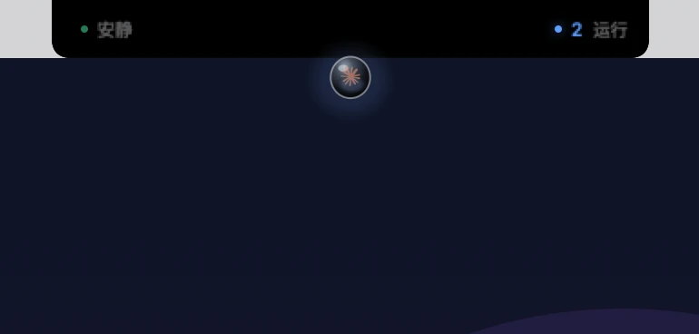
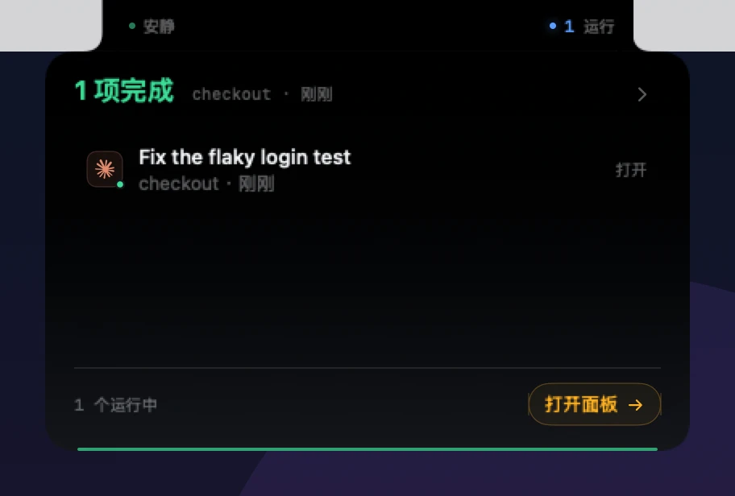
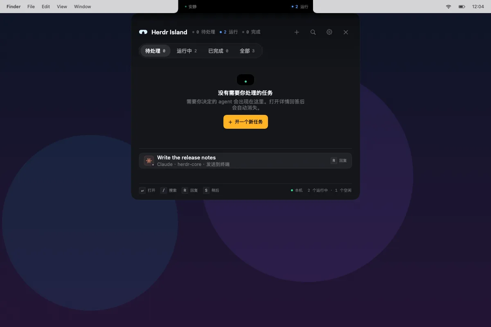
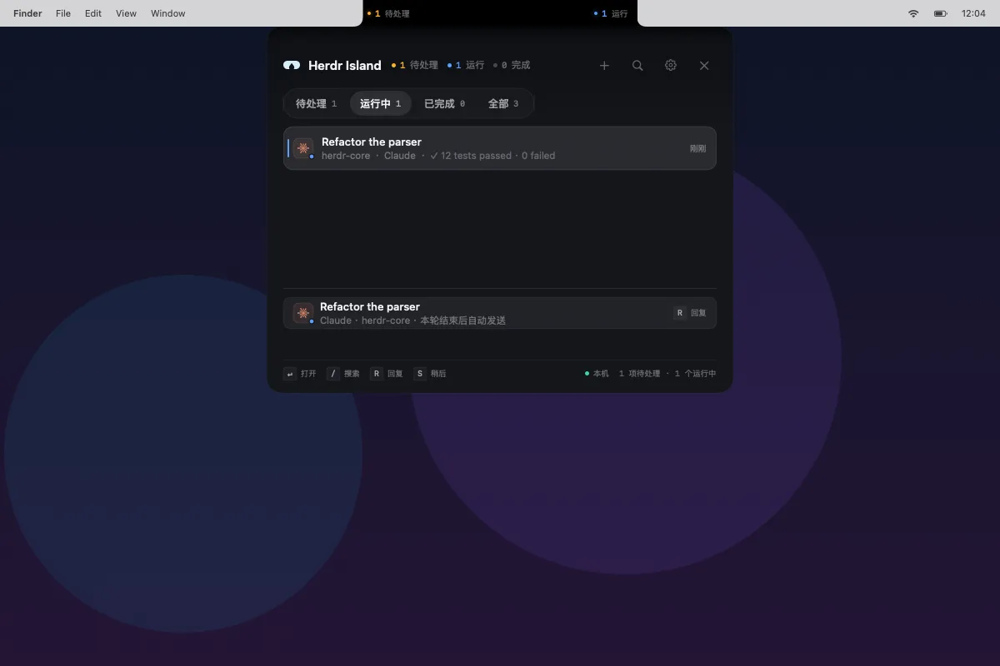
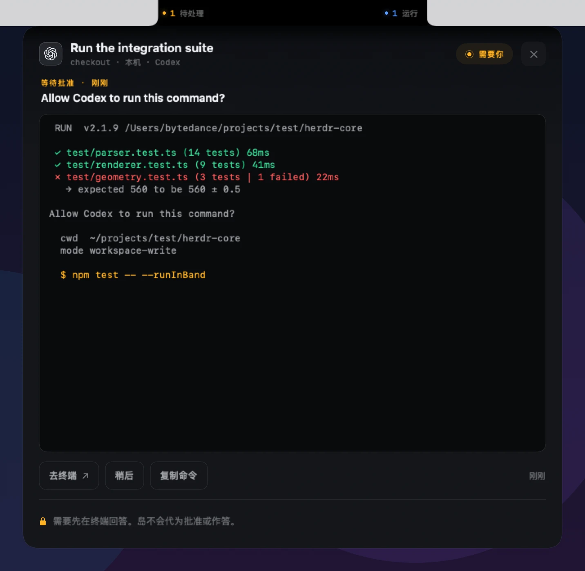
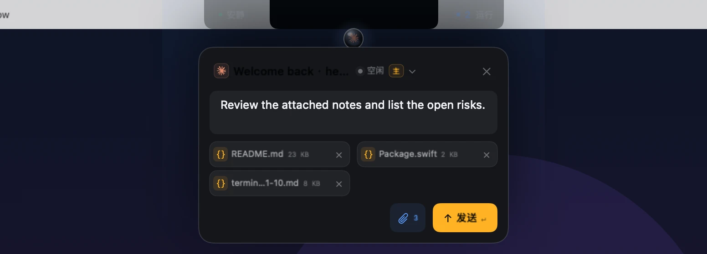
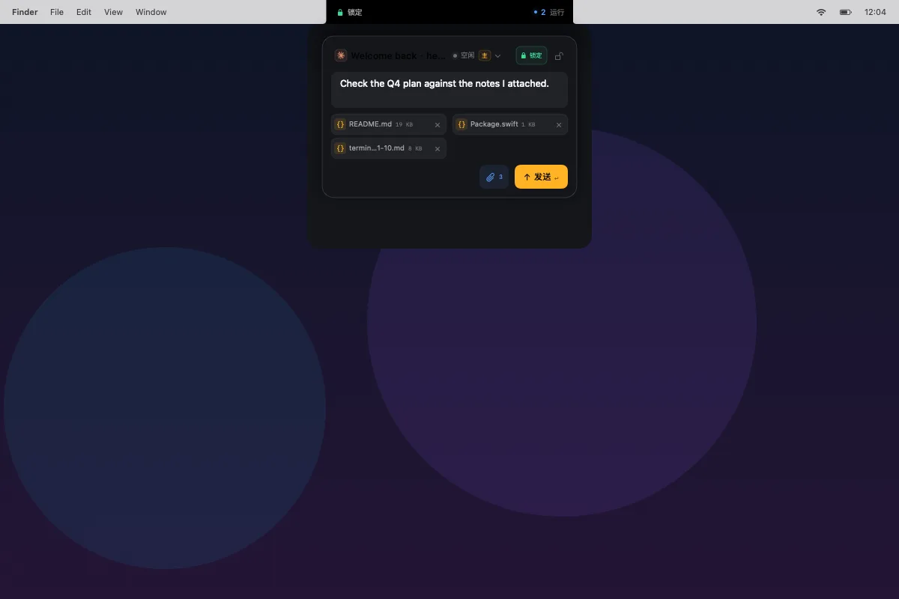

blocked 必须由你确认
可以直接在详情终端里阅读、选择并确认，也可以回到 Herdr 打开同一会话。自动派发仍然走会拒绝 blocked agent 的 herdr agent prompt。
Herdr 的 macOS 图形前端
Herdr Island 把 Herdr 里每个 coding agent 的状态放进刘海两侧。左边是待处理，右边是运行、完成或空闲。拖动刘海下那滴水，输入框就出现在落点上方。它是 Herdr 的图形前端，Herdr 仍然是任务的执行者。
macOS 14+ · Herdr 0.9.5+ · Ghostty 可选 · Apple Silicon
页面里的演示不连接 Herdr，也不会创建任务。
01安装
预编译版本为 Apple Silicon 构建，要求 macOS 14 或更新版本。应用只有 ad-hoc 签名，首次打开需要手动放行。
下载 HerdrIsland-<版本>.zip 和同名 .sha256，放在同一目录后运行：
shasum -a 256 -c HerdrIsland-<版本>.zip.sha256解压，把 HerdrIsland.app 拖进 /Applications。
应用只有 ad-hoc 签名，没有经过 Apple 公证，Gatekeeper 会拦截。到 系统设置 → 隐私与安全性，在「安全性」一栏点「仍要打开」，再输入管理员密码。也可以在终端去掉下载隔离标记：
xattr -dr com.apple.quarantine /Applications/HerdrIsland.appsudo spctl --master-disable 全局关闭 Gatekeeper。按提示授予 Screen Recording 和 Automation 权限。替换应用后这些权限可能再次询问。
02状态
不用切窗口。左耳显示待处理或安静，右耳显示运行、完成或空闲。鼠标移到水滴或两耳上才接收事件，其他时候桌面照常点击。

左耳是待处理或安静，右耳是运行、完成或空闲。收起时它不改变刘海的形状，也不挡桌面点击。

一轮完成时出现 400 × 248 的 peek，只列一条完成结果。鼠标移入或点击，进入完整任务台。

宽 560，高 440 到 640。四个筛选，/ 搜索，每行带 agent 图标、状态点和最近一行终端输出。
03任务台
任务台按状态分组。运行中的 agent 显示最近一行终端输出；你可以先排一句话，等这一轮结束自动投递。
待处理、运行中、已完成、全部。每行带 agent 图标、状态点和最近一行终端输出。
运行中的行可以排一条消息。本轮结束且没有打开交互终端时自动投递，排队项可以取消。
/ 打开搜索。↑↓ 选择，R 回复，S 稍后，Return 打开详情。
Unix socket 直读 agent.list / pane.list，每 1.5 秒采样，状态事件即时更新。断线回退 CLI。

运行中的行显示最近一行终端输出。排队的消息会等这一轮结束再发送。
04终端
点开任务，打开一个 1080 × 720 的原生 Herdr 终端窗口。工作区、标签、分屏、菜单、鼠标和终端程序都在。SwiftTerm 渲染，不需要 Ghostty。
关闭窗口只停止本应用启动的客户端，不停止 Herdr server、shell 或 agent。原来的 660 × 640 单任务详情仍然保留，也可以跳到 Herdr。
终端按你实际键入的内容发送，不追加 Enter。键盘和粘贴按顺序等待 Herdr 确认；鼠标通道没有处理确认，跨通道的严格排序不保证。

单任务详情里的终端输出。点「去终端」进入 1080 × 720 完整终端。
05新任务
拖动水滴时，水滴和刘海之间先拉出液态颈部。超过 96pt 完全脱离，松手的位置出现涟漪，输入框锚定在落点上方。
水滴还连在刘海上，颈部随指针变细。
完全脱离，刘海下只留一个小水珠。
落点出现涟漪，输入框在落点上方展开。
island/<单词>-<随机后缀>。
多行任务、模型、目录和 worktree 在同一处。松手的位置决定它出现在哪里。
06窗口
按住 Option 拖动水滴，锁定指针下的窗口。发送时用 ScreenCaptureKit 截一张窗口 PNG，把绝对路径、app 名、窗口标题、捕获时间和任务拼进 prompt。

锁定后窗口和岛之间有一条细线。截图只在按下发送时发生。
按住 Option 拖动水滴，锁定指针下的窗口。锁定只存在于本次运行期间。
只在按下发送时截取，不会在锁定期间持续录屏。窗口和岛之间有一条跟随移动的细线。
截图保存在本机 ~/Library/Application Support/HerdrIsland/Captures/。prompt 只带路径和窗口元数据。
只能选当前 Space、当前屏幕上的窗口。窗口关闭再打开会换 windowID，需要重新锁定。受 DRM 或安全保护的窗口可能只能截到黑屏。
07安全
agent 卡在权限、信任或用量弹窗时，Island 把状态和终端画面交给你。blocked 不会被自动放行。
Island 不会自动批准，也不会替你点同意。
可以直接在详情终端里阅读、选择并确认，也可以回到 Herdr 打开同一会话。自动派发仍然走会拒绝 blocked agent 的 herdr agent prompt。
Claude、Cursor、Codex 的信任弹窗和用量、模型选择弹窗必须由你处理。自动消息发送前也会检查这些弹窗。
窗口截图只保存在本机 Captures 目录。prompt 里只有绝对路径、app 名、窗口标题和捕获时间，不会上传到别处。
终端只转发你主动输入的按键和粘贴内容。新任务只提交给刚创建的 workspace 和 agent，不会向已有 blocked agent 发送。
新 agent 启动后如果进入 blocked，仍然需要你亲自处理。Cursor 的工作区信任弹窗由你确认，新任务的 worktree 也不会带 --trust-repository。